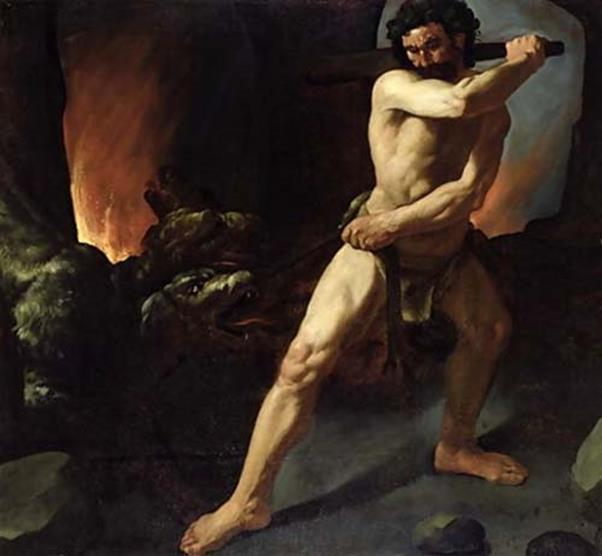

Lần này thì Eurysthée giao cho Héraclès một việc thật oái oăm hết chỗ nói: xuống dưới vương quốc của thần Hadès bắt sống chó ngao Cerbère ba đầu đem về. Công việc này vượt quá tài năng của Héraclès. Chàng phải cầu khấn Zeus giúp đỡ. Thần Zeus phái ngay thần Hermès, người dẫn đường không thể chê trách được tới giúp Héraclès. Còn nữ thần Athéna lúc này cũng ở bên chàng để bảo hộ cho chàng, người con trai danh tiếng của thần Zeus vĩ đại. Héraclès đi qua vùng đồng bằng Laconie rồi chui xuống một cái vực thẳm sâu hun hút ở mũi Ténare để xuống âm phủ. Lão già Charon lạnh lùng và nghiệt ngã đòi tiền đò. Nhưng Héraclès chỉ giơ nắm đấm ra là mọi việc đều ổn. Vừa bước vào vương quốc tối tăm của thần Hadès, Héraclès đã chứng kiến một cảnh cực hình. Người anh hùng Thésée và tùy tòng của mình là Pirithoos bị xiềng chặt vào một tảng đá tên gọi là Chiếc ghế lãng quên (La chaise de l'Oubli). Hỏi ra thì Héraclès được kể cho biết như sau:
Pirithoos vua xứ Thessalie, cai quản những người Lapithes, nghe danh tiếng người anh hùng Thésée với bao chiến công lừng lẫy, đem lòng ghen tị. Nhà vua muốn thử sức với Thésée bằng cách cướp đoạt đàn gia súc của Thésée để khiêu khích một cuộc giao đấu. Pirithoos muốn biết những lời đồn đại về người anh hùng này hư thực đến thế nào. Tất nhiên Thésée sẵn sàng chấp nhận. Nhưng khi bước vào cuộc thi thì Pirithoos không đủ gan để dấn thân vào thử thách. Nhà vua hạ vũ khí xin hàng phục Thésée và nguyện làm người tùy tòng phục vụ Thésée. Có chuyện kể, không phải Pirithoos xin hàng phục mà đã dũng cảm giao đấu với Thésée song bị thua và xin được kết bạn với Thésée. Bữa kia không rõ ma đưa lối quỷ đưa đường thế nào, Thésée và Pirithoos rủ nhau xuống âm phủ mưu đồ một việc lớn: cướp nàng Perséphone của thần Hadès. Hành động bạo ngược của họ bị các vị thần trừng phạt. Họ bị xích chặt vào núi đá hết năm này đến năm khác.
Nghe xong câu chuyện, Héraclès liền vung gươm chặt xiềng giải thoát cho Thésée. Nhưng khi chàng quay sang Pirithoos thì mặt đất bỗng ầm ầm chuyển động và rung giật lên từng cơn. Héraclès biết rằng đó là các vị thần biểu thị sự phản đối. Chàng không dám giải thoát tiếp cho Pirithoos.
Héraclès đi sâu vào thế giới những vong hồn. Bóng đen vật vờ của những vong hồn trông thấy chàng, sợ hãi, bỏ chạy. Nhưng có một bóng đen đứng lại, chờ cho chàng đi tới gần. Đó là linh hồn Méléagre con trai của vua Oenée và hoàng hậu Althée cầm quyền ở vương quốc Calydon. Méléagre chết đi với bao nỗi oán hận trong lòng. Thuở ấy, khi chàng ra đời, mẹ chàng đã mời nữ thần Moires, những nữ thần cai quản số mệnh, còn có tên gọi là Parques tới thăm. Các nữ thần đã phán truyền cho Althée biết về tương lai đứa con của mình. Nàng Clotho bảo, Méléagre sau này lớn lên sẽ là một dũng sĩ nổi danh về chí khí anh hùng và lòng can đảm. Nàng Lachésis nói, Méléagre sẽ có một sức mạnh khác thường ít người bì kịp. Còn nàng Atropos thì nói, Méléagre sẽ sống lâu bằng đoạn củi cháy trong bếp lửa kia. Chừng nào mà đoạn củi đó cháy hết thì cuộc đời của Méléagre cũng hết. Nghe xong lời phán truyền này Althée sợ hãi vội giập tắt ngay đoạn củi và giấu cẩn thận vào trong một cái tráp. Méléagre lớn lên khỏe mạnh như sói, gấu, dũng cảm như hùm beo. Chàng đã cùng với nhiều vị anh hùng đi săn con lợn rừng hung dữ thường về phá hoại vùng đồng bằng Calydon. Con lợn rừng này do nữ thần Artémis thả về để trừng phạt vua Oenée về tội đã quên lễ hiến tế thường lệ vào đầu vụ thu hoạch. Con lợn rừng bị giết. Một cuộc họp giữa những người tham dự cuộc săn để bình công chia phần. Nữ dũng sĩ Atalante người được Méléagre đem lòng yêu dấu và người đã đánh trúng con vật đòn đầu tiên, bắn cho nó bị thương. Tiếp đó một dũng sĩ khác đánh trúng mắt con vật, và Méléagre đánh những đòn cuối cùng, giết chết ác thú. Méléagre cho rằng Atalante xứng đáng được nhận phần thưởng danh dự: cái đầu và bộ da con thú. Nhưng ba người cậu của Méléagre là Alcée, Céphée và Pléxippe chống lại. Họ đe doạ sẽ tước đoạt phần thưởng của Atalante. Họ cho rằng trao giải thưởng cao nhất của cuộc săn cho một người đàn bà là không xứng đáng, là nhục nhã. Tệ hại hơn nữa, những ông cậu này lại nói những lời lẽ thô bỉ xúc phạm đến Atalante và Méléagre. Không kìm hãm được nỗi tức giận, Méléagre xô xát với những ông cậu và chàng đã giết chết hai người là Céphée và Pléxippe. Được tin những người em ruột của mình bị con trai mình giết, Althée vô cùng căm uất. Bà lấy đoạn củi cháy xưa kia mà bà đã cất giấu trong tráp, đem vứt vào bếp. Vì thế trong cuộc chiến tranh giữa những người Curètes và Élis, Méléagre bị tử trận. Méléagre chết khiến cho Althée hồi tỉnh lại. Bà vô cùng đau đớn, vô cùng hối hận vì hành động mất trí của mình, và bà đã tự sát. (Một nguồn chuyện khác kể, Althée cầu khấn các vị thần dưới âm phủ trừng trị Méléagre, do đó Méléagre bị tử trận).
Méléagre chết đi với bao nỗi oán hận trong lòng. Các em gái của chàng thường gọi là những Méléagrides165 khóc than thảm thiết cho cảnh gia đình tan nát. Nữ thần Artémis bèn biến những cô gái của Méléagre thành những con gà và lấy những hạt nước mắt của các cô gieo lên trên bộ lông. Và thế là các cô biến thành những con gà sao166. Riêng có nàng Dejánire không chịu số phận đó. Nàng sống lẻ loi với bao nỗi lo âu. Cuộc đời nàng sẽ ra sao khi không còn một ai để làm chỗ nương tựa. Đó là điều mà Méléagre khi từ giã cõi đời vẫn canh cánh bên lòng chẳng sao nguôi được nỗi lo âu.
Vong hồn Méléagre gặp người anh hùng Héraclès, liền cất tiếng cầu xin:
- Hỡi Héraclès, người anh hùng danh tiếng lẫy lừng, con của thần Zeus vĩ đại! Chàng đã nghe ta giãi bày hết mọi nỗi u uất trong lòng. Ta chỉ cầu xin chàng có một điều: xin chàng hãy rủ lòng thương lấy người em gái bất hạnh ấy của ta. Số phận rủi ro đã cướp đời ta đi quá sớm để lại em gái ta sống trơ trọi một mình. Vắng ta, nó sống ra sao đây giữa cuộc đời đầy sóng gió này? Xin dũng sĩ hãy vì ta mà giúp đỡ cuộc sống của em gái ta. Nếu như chàng không chê nó là người kém nhan sắc thì xin chàng hãy là người che chở cho nó suốt đời, gắn bó cuộc đời nó với cuộc đời chàng để cho ta được yên tâm ngậm cười nơi chín suối.
Héraclès lắng nghe những lời nói của Méléagre mà nước mắt từ đâu cứ tuôn trào ra trên đôi gò má. Chàng an ủi vong hồn Méléagre vừa hứa sẽ làm theo ý muốn của Méléagre.
Theo sự dẫn đường của Hermès, Héraclès tiếp tục đi. Bóng đen của ác quỷ Méduse xông lại gần chàng, Héraclès đưa tay vào chuôi gươm nhưng Hermès ngăn chàng lại và cho biết, đó chỉ là cái bóng vật vờ không thể làm hại ai. Héraclès còn được chứng kiến biết bao nhiêu cảnh khủng khiếp ở thế giới của những âm hồn lạnh lẽo, tối tăm u ám này. Cuối cùng, chàng tới cung điện của thần Hadès và được vị thần này cho phép vào tiếp kiến. Ngồi trên ngai vàng, vị thần cai quản vương quốc của những người chết Hadès và vợ, nàng Perséphone kiều diễm, con của nữ thần Déméter vĩ đại, nhìn người anh hùng, con của Zeus đấng phụ vương, với tấm lòng cảm phục. Chàng trông thực uy nghi, đường bệ. Đứng trước ngai vàng tay tì lên cán chùy to lớn, trên mình khoác tấm áo da sư tử, vai đeo cây cung và ống tên, ngang sườn một thanh gươm, trông Héraclès oai phong lẫm liệt như một vị thần. Hadès cất tiếng hỏi:
- Hỡi Héraclès, con của Zeus chí tôn chí kính. Vì sao người lại từ bỏ thế giới rực rỡ ánh sáng vàng của thần Mặt trời-Hélios để xuống vương quốc tối tăm này? Phải chăng thần Zeus muốn ban cho ta một người anh hùng? Hay người xuống đây để tước đoạt của ta nàng Perséphone xinh đẹp?
Héraclès kính cẩn trả lời:
- Hỡi Hadès, vị thần cai quản vương quốc tối tăm của những vong hồn! Xin người đừng giận! Ta xuống đây không phải do trái tim ta xúi giục mà là theo lệnh của một người khác. Nhà vua Eurysthée trị vì ở thành Mycènes trên đất Argolide, người được nữ thần Héra sùng ái, sai ta phải làm một công việc cực kỳ oái oăm để thử thách tài năng và chí khí người con của thần Zeus là bắt con chó ngao Cerbère ba đầu về. Hỡi Hadès, vị vua đầy quyền thế của thế giới vong hồn! Xin người cho phép ta làm việc đó vì Héraclès này không thể nào trở về thế giới đầy ánh sáng mặt trời khi chưa chinh phục được con chó Cerbère dữ tợn.
Hadès nghe xong mỉm cười. Thần cho phép Héraclès bắt chó Cerbère nhưng với một điều kiện: không được dùng vũ khí.
Héraclès lại lên đường đi tìm chó Cerbère. Tìm mãi chàng mới bắt gặp được nó. Chàng dùng đôi tay rắn như sắt, cứng như đồng tóm chặt lấy cổ nó, ấn xuống đất và bóp mạnh. Con chó sủa ầm vang. Cả vương quốc tối tăm của thần Hadès kinh hoàng vì tiếng sủa từ ba cái mõm của nó. Cerbère vùng vẫy nhưng không sao gỡ ra khỏi đôi tay của Héraclès. Nó dùng cái đuôi lợi hại đánh trả, vì đuôi nó là một con rắn khá to. Nó quấn đuôi vào chân Héraclès rồi dùng những chiếc răng nhọn hoắt cắn. Nhưng vô ích. Nó ngày càng bị ngạt thở và giãy giụa như sắp chết. Lúc đó Héraclès lấy dây đánh đai quanh cổ nó rồi dắt đi. Chàng dắt nó từ thế giới tối tăm dưới lòng đất lên dương gian tràn đầy ánh sáng mặt trời rực rỡ. Lần đầu tiên nhìn thấy ánh sáng chói lòa, con chó vô cùng sợ hãi, mắt cứ nhắm nghiền. Nó lồng lộn như nổi cơn điên. Rãi rớt từ ba cái mõm kinh tởm của nó chảy ròng ròng xuống mặt đất đen làm mọc lên những loài cây cỏ độc mà nếu người ta ăn phải là bỏ mạng.

Về đến Mycènes, tưởng Eurysthée dùng con chó vào việc gì, ngờ đâu vừa trông thấy con chó ba đầu cổ rắn, Eurysthée sợ quá suýt ngất đi. Hắn ra lệnh ngay cho Héraclès dắt Cerbère trả lại cho thần Hadès. Thế là người anh hùng của chúng ta phải lặn lội xuống âm phủ một lần nữa.